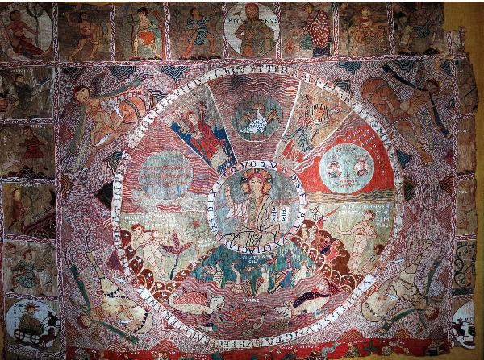

The Girona Tapestry

This website is an introduction to the Creation Tapestry, a large eleventh-century textile that is displayed today in the Cathedral of Girona, Spain. The Creation Tapestry is a rich, beautiful and ambitious work both in its craft and its intellectual themes. In words and images, the tapestry depicts the Creation story from Genesis, the cosmos and seasons of the year, and the legend of the discovery of a piece of the True Cross by the Emperor Constantine. Very little is known about who created the tapestry or how it was originally used or displayed.
The pages below explore various aspects of the tapestry.
photo: Museu d'Historia de Catalunya, el tapis de la Creacio (Girona), by Enfo via Wikimedia Commons, CC BY-SA 3.0